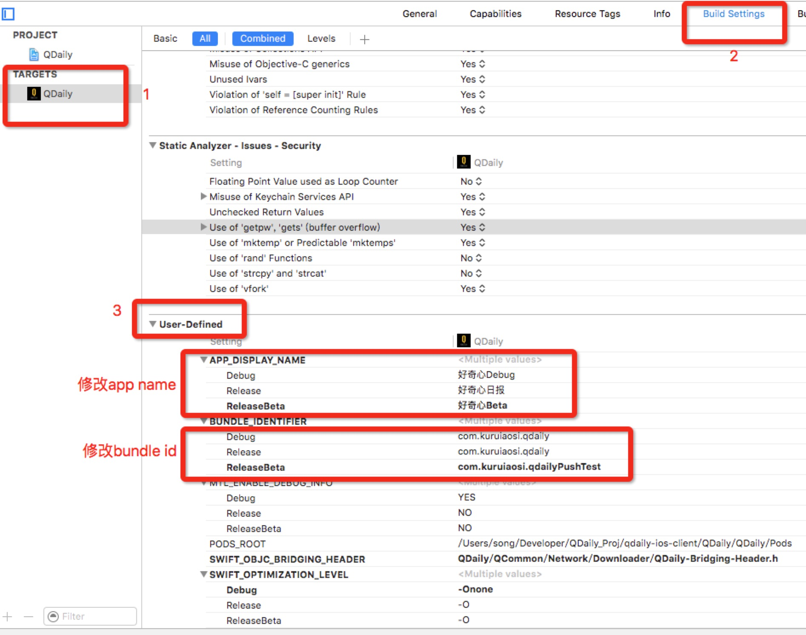
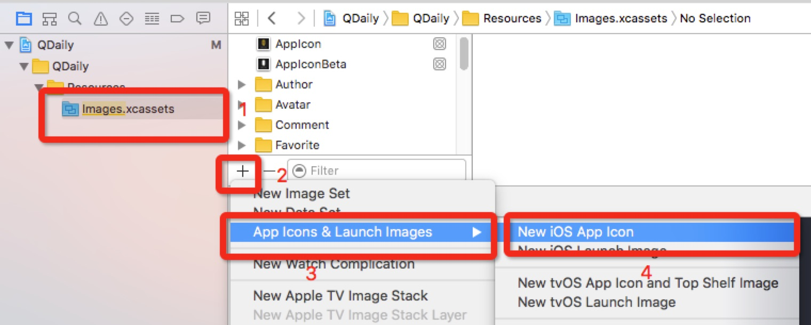
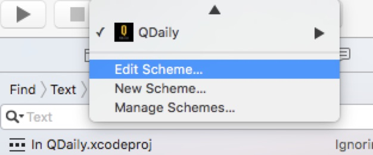

今日好文20160627-30
这几天先用swift把一键上传七牛的代码写好了，学着了一些osx的开发技巧，oc swfit的混编，swift的闭包，还有swift最让新用户崩溃的半弱类型(? or !)。
1、Swift 范的 CGRect、CGSize 和 CGPoint
先来个轻松的。规范下swift的书写，看完不累，而且貌似有些收获。程序员要有代码洁癖。
一个小技巧，之前用scheme也达到了类似的效果，不过没有这么彻底。主要区分在预编译指令这里的区别。不过对于跳转的app url scheme在修改了bundleid后会出现问题。例如跳转微信授权和分享后会，会回不到当前app。大多时候都是很方便的。
2、Q-ImageView 图片云处理接口封装
马上就要用qiniu解放流量，文章对接口做了很多封装 可以参考下
3、android版本更新策略
QDaily一直有应用更新策略，不过一直不完善。应该增加旧版本强制更新的方案。可以参考该代码作一个plugin
4、Android 架构整理
对android下mvp和mvvm做了一个不错的整理。其中MVP部分由于谷歌出品 更加值得借鉴
5、使用 Xcode 8 为 iMessage 创建表情包插件
算是一个新的思路的，不用写代码编辑一个表情包，不过意义不大。首先它只是个表情包，看起来和一个zip区别也不大，而且是个独立组件，没有宿主app
6、将QDaily的iOS版结合jenkins进行持续集成
核心脚本：iOS自动打包并发布脚本。亲测非常好用，简单修改并用shell进行了封装，就成功打包ipa并上传到蒲公英。类似的，修改蒲公英处的代码就可以实现上传到任何服务器。自定义shell如下：
cd `dirname $0` && \
cd ../QDaily && \
git checkout new && \
git pull && \
pod install --verbose --no-repo-update && \
python ../Script/autobuild.py -w QDaily.xcworkspace -s QDaily -t QDaily -o `dirname $0`"/QDailyBeta.ipa"
其中autobuild.py脚本参考源码https://github.com/carya/Util。本地脚本里面的CONFIGURATION我填写的releaseBeta以区分生产环境和开发环境，具体可以参考我的另一篇文章
关于jenkins有两个不错的参考链接：http://reviewcode.cn/article.html?reviewId=11和http://xuanyiliu.com/chixujicheng/。
在jenkins中，配置直接调用我们的脚本即可。
iOS版本打包已经成功。唯一有个问题就是默认scheme不存在，需要打开xcode生成一个，猜测可能是由于这一块的被我加进gitignore里了，没有上传上去。
7、surge神器+ss傻瓜配置指南
程序员都应该会用梯子。iOS9下最好用的梯子，没有之一。自己在海外有VPS，搭了ss，一直以来我的mac都是用ss的，现在在我的iPhone也可以了。
注意download configuration要填写图片中的那个。
至于surge怎么下载，这个不需要教吧。无非就是花钱买 OR 各种正版破解助手 OR 越狱了。反正我是用同步推备份了一个。
使用iOS APP的Build Configuration区分开发和生产环境
前两天看文章使用 Xcode 的 Target 区分开发和生产环境，感觉这个虽然是一种区分开发和生产环境比较强大的方法，但也有比较轻量级的，下面就分享下QDaily采用的配置Build Configuration方案。
区分测试环境和生产环境的上面的链接已经说了：区分统计数据、区分crash log、区分server地址、区分本地数据库...
每个工程默认会有两个Build Configure，即debug和release，我们就在这里做文章，增加一个releaseBeta版本，用来打包内部测试环境版本。
QDaily在这里主要区分了app name，app icon，app bundleId（测试推送），并增加了一个全局的预处理宏BETA，代码中通过BETA标志进行和DEBUG相似的处理
创建并配置新的Build Configuration
1、新建
我们主要是测试版需要区分，DEBUG版本并不需要，所以duplicate了release的默认配置。新建完记得改名，下面我已经新建过了，就没有改名那一步了。

2、区分app name、bundle Id
所有步骤看图，非常方便，非常简单。

3、设置一个预处理宏和编译器标志BETA
具体看下图步骤，增加一个BETA：

我们app中现在还没有使用swift，所以也就没有做swift的设置，如果需要可以去参考顶部的引用链接进行设置。
这样代码里就能直接进行调用了。eg：

4、修改releaseBeta的app icon
这里要分两步，先在images.xcassets中新建一个针对beta版本的app icon：

我们这里已经建立过了，下一步就不示范了。这里我们把新icon命名为AppIconBeta。
第二步和上面相似，在对应位置上填上我们对新icon的命名就好了：

5、其它区分
所有build settings中的选项都可以用Build Configuration来进行区分设置，这里就不一一进行示范了。QDaily只有上面这些做了处理，其它都是通过BETA宏在代码里的操作。
使用 Build Configuration
大多时候，我们都只是在编写release包时候需要对线上和开发环境进行区分，我们只需要修改archive中的scheme就好了：
先选择app target的Edit Scheme。

然后在Archive中选择我们新建的那个就好了。

关于管理多个 Build Configuration 的一些注意事项
和新建target相比，亲测没有任何注意事项...你只要注意不要把releaseBeta传到appstore就行了。
文章最后的推荐
安利一个我写的Mac下轻松上传到七牛传图的app，本文加了这么多图片，表示毫无压力，非常简单。
截屏后点击“上传剪切板图片到七牛”这个按钮（也可以拖拽图片文件上传）。

完成后这个外链url会默认在你的剪切板。当然也可以完成后点击“Copy MarkDown URL”，这样会直接copy一个下面这样的字符串在剪切板，你可以在你的md文件中直接使用：

真是markdown博客书写者的福音啊。那么这么NB的app哪里有呢？稍后整理完成我会放出链接来~
移动端开发好文20160626
1、Android App 不死之路
软件开发者要有自己的节操，有时候为了推送需要，有一个非常小的进程常驻后台还可以接受。国内安卓生态就是被这种自以为nb的开发毁掉的。
不过技术本身没有错，可以看看底层实现。不过这类技术可用性不高。
2、ES6 有什么新东西？
移动端开发好文20160625
周六，放松下，没看几篇文章。最近写博客传图很麻烦，今天写了一个Mac端的小程序，简单传图到qiniu上。下周写好了我传到github上，然后写个文章介绍下。
1、微信Android热补丁实践演进之路
微信终端开发中心的另一篇好文，业界已经传遍了。
微信出品，都是长文，都是竞品。算是给所有还在做android热修复的朋友一个指明。个人之前用过andfix，感觉兼容性很差，给版本提高了1%的crash率，很伤心。微信还挺推崇Nuwa的，看来可以尝试一下。
文章底部的参考文章很详尽，想了解学习android hotfix的同学算是找到所以呢地图了。
移动端开发好文20160624
个人发现在看公众号或者博客的文章会有问题，就是会留在自己的舒适区域，只看自己想看的那一部分，导致收获会越来越少，有空还是要读书，系统性的学习。
1、Android性能调优利器StrictMode
移动端开发好文20160623
1、开发者所需要知道的 iOS 10 SDK 新特性
iOS10来了，也该了解下能做点什么了。
1、SiriKit虽然很美，但开放不多，可能用处不大
2、大量Extension，有意思的是iMessage、User Notifications以及上面的siri的intents。app间交互意义很大，值得研究
3、swift3还没来，可以再观望下
RN学习1——前奏，app插件化和热更新的探索
React Native（以下简称RN）有大量前端开发者的追捧。前端开发是一个活跃的社区，一直尝试着一统前后端，做一个全栈开发，RN就是他们在客户端领域的尝试。
说是从零开始，但其实我还是懂一点点JS代码的，而且算是一个有经验的iOS、Android开发，对很多js和native交互的细节和特性还算了解，在QDaily里面也做过好多hybird的尝试，还经常用JSPatch做hotfix，总的来说，就是对hot update、插件化以及hybird编程非常非常感兴趣。RN也许是已知的开源方案中最好的一个吧。
一、写在最前
先开始提供个思路，作为一个移动客户端开发（区别于前端开发），我使用RN的目的根本上是为了插件化以及插件的线上热更新，对于前端开发那种全应用RN化的雄心是敬谢不敏的，同事对这种方案开发全app的能力也是存疑的（后文会解释原因）。
至于为什么要学习RN，主要是个人以后目标是做一个更加成熟团队的客户端负责人（or客户端架构师），需要对整个客户端横向技术栈都要有自己的理解和认识，现在已经能够在Android和iOS方面有一些自己的认识，进入RN领域其实也是顺理成章的了。
在未来RN的学习和使用过程中，我也会更加倾向于关于这种方案的内在原理、使用场景、使用边界以及一些其它优缺点方面，实际使用中也会先在一些比较轻量级的场景使用。
二、动态配置
客户端的新版本都依赖用户进行升级才行，如何能够第一时间让用户使用最新的版本是app开发者的永恒话题。
如果采用后台热更新，无论采用何种方式，我们的流程总是可以归结为以下三部曲：“从 Server 获取配置 –> 解析 –> 执行native代码”。
针对客户端程序的混合开发非常有必要，可以有效的进行app一些突发模块的开发和处理。已知的一般思路包括：
1、简单的js bridge方式，内容呈现采用H5，增加一些和native的交互。现在好奇心日报就是这个方案，虽然简陋，但基本就是这个思路。上个东家微信在这方面也基本就采用了相似的方案，只不过在加密和安全方面做了更多的处理。
2、后台以zip包得形式下发html、css、js和相关png组件，下载之后将所有资源按照原有目录结构放在app本地的一个http服务器中，app中得webview请求localhost的固定地址进行请求，这种请求会有AJAX跨域问题，一般只有native端完全接管网络请求可以使用，例如微信春晚红包就是这个方案。方案2基本是方案1的优化变种，由于兼容性好，入门简单，比较成熟。
3、以zip包得形式下发html、css、js和相关png组件，客户端深订制一套方案，可以让js使用一些原生的UI组件能力，比较典型的就是增加下拉刷新组件。这套方案在淘宝、支付宝广泛使用，需要进行学习和研究，一方面在部署架构，另一方面是具体实现细节。阿里开源了其中的weex组件，基本思路也是这样的。
4、纯js或者lua以patch的形式进行原生开发，通过反射调起原生代码。这个方案在iOS下可行，Android下面还存疑。而且是比较重的客户端耦合，好奇心日报现在用它进行一些紧急bug的处理。
5、采用react-native进行混编，这种方案比较完整，就是原生native客户端集成react-native组件，通过后台订制下发一些使用js和css编写的资源模块，通过react-native框架进行渲染解析，成为原生应用。方案已经在天猫iPad客户端的某些模块上、QZone的某些使用，而且facebook的f8大会的app全部采用其编写，其生产能力是不容质疑的。方案原理和方案3、方案4类似，只不过中间封装了一个更加完善的中间件。
三、好奇心日报的现有尝试
1、基于css的ui配置方案。
基本思路是在css文件中定义ui组件的边距、颜色、字体、大小、背景色等等与UI相关的内容，在代码中通过宏（Android中用import static）进行UI渲染。
在app启动时，将css文件load进入内存，保存成k-v的形式，具体UI代码直接面对这些k-v数据结构即可。
这种方法的好处是：
- 1、在适配夜间模式或者一些固定屏幕版本时，只需增加一套css文件即可处理；
- 2、而且，由于修改资源文件，app不需要重新打包编译；
- 3、同时，这种方案可以通过后台配置新的资源文件，在运行时替换掉内存中的约定key下的value，从而实现线上条件下的UI调整。
局限性也是非常明显的：对native代码的依赖太硬，能做的非常少，也就能改改样式，与热更新和热修复都扯不上关系。
2、基于js bridge的bybird方案
基于H5的webview hybird方案算是在性能上做一些妥协后比较成熟的方案了。
在android和iOS部分各封装一个js-bridge用于js和native的交互，相当于一个中间件。该中间件包含一个native部分和一个js部分，两部分沟通采用各自平台的特性方案，iOS采用订制request scheme并拦截request的方案，android采用@javascript的方案。通过中间件，前端开发者仅仅使用1套代码就可以兼容两个平台，两个平台各自暴露native方法给前端。
该方案实现的部分有：
- 1、两个js-bridge，用于交互。并以此约定标准化调用接口。
- 2、为webview发起的请求绑定cookie，以能够进行用户识别
- 3、为webview发起的请求定制化UA，以区分浏览器还是app，以及android还是iOS。
- 4、针对webview中所有资源（html、js、css、image）都进行本地的持久化，以提高访问速度。
方案好处都能看见，缺陷也很明显：效率太依赖机器性能以及浏览器内核（不过就算内核再好效率也是存疑的），同时针对原生部分的调用依赖于原生提供能接口，几乎是每增加一个功能，native部分也需要对应开发一边接口。
以上两个方案各有特征，但终究没离开采用约定好的配置信息就行混合编程的路子。从本质上来说，就是移动端和服务端约定了一套协议，但是协议内容严重依赖于应用内提供的能力，不利于拓展。尤其是方案1，只是在解析字符串，它完全不具备运行和调试的能力。方案2的效率问题也非常明显。
3、jspatch的热修复方案
iOS7以后，系统中包含了jscontext进行js语言的解析，相当于从读取配置文件到读取逻辑一个质的飞跃。
jspatch将js代码进行解析，并通过反射（invoker）调用objective-c的代码，几乎可以做所有oc可以做的事情（因为OC的runtime实在太强大）。
方案在QDaily中主要用于线上热修复。这个方案也有其不好之处：一个是只支持iOS，针对android还是无能为力；二是编写页面实在难用，难以调试，从整个生态来讲，也都使用比较轻量。
react native在iOS端实现远离和jspatch的远离基本一致，同事结合了方案2中语法的一些特性以及方案1中的配置特性。相信是现在已知的最优解决方案。
四、混编
决定学习之初直接上混编，因为这才是使用的目的，只有支持这个才具备插件使用的条件。
开一个官方demo——AwesomeProject，然后开始修改（如何安装和配置请自行google，官方教程很详细）。
1、OC调起RN
直接上代码，我们假设native页面本来好好的，点击了一个按钮跳到了一个RN的活动页面
- (void)viewDidLoad {
[super viewDidLoad];
UIButton* startRNVC = [[UIButton alloc] initWithFrame:CGRectMake(20, 50, 60, 40)];
[startRNVC setTitle:@"Start RN" forState:UIControlStateNormal];
[startRNVC addTarget:self action:@selector(gotoRN) forControlEvents:UIControlEventTouchUpInside];
[self.view addSubview:startRNVC];
}
- (void) gotoRN {
NSURL *jsCodeLocation = [NSURL URLWithString:@"http://localhost:8081/index.ios.bundle?platform=ios&dev=true"];
RCTRootView *rootView = [[RCTRootView alloc] initWithBundleURL:jsCodeLocation
moduleName:@"AwesomeProject"
initialProperties:nil
launchOptions:nil];
rootView.backgroundColor = [[UIColor alloc] initWithRed:1.0f green:1.0f blue:1.0f alpha:1];
UIViewController *rootViewController = [UIViewController new];
rootViewController.view = rootView;
[self.navigationController pushViewController:rootViewController animated:YES];
}
2、OC中等待RN调起的部分
RN有比较完整的调用代码，只要按步骤做就好了。关键是RCT_EXPORT_MODULE这个宏，会在class的load方法中进行register，这点和js-bridge的方案很像。
@implementation SpringBoard
RCT_EXPORT_MODULE();
RCT_EXPORT_METHOD(gotoIM:(RCTResponseSenderBlock)callback)
{
AppDelegate* appdelegate = (AppDelegate*) [UIApplication sharedApplication].delegate;
UINavigationController *controller = (UINavigationController*)[appdelegate.window rootViewController];
CDLoginVC *loginVC = [[CDLoginVC alloc] init];
[controller pushViewController:loginVC animated:YES];
callback(@[[NSNull null]]);
}
- (dispatch_queue_t)methodQueue
{
return dispatch_get_main_queue();
}
@end
3、RN部分调起Native
RN还不是很理解，就把代码都贴上来了。这里会在页面启动时候直接alert出来，点击会再跳回native部分。
'use strict';
var React = require('React');
var RN = require('react-native');
var {
Image,
AppRegistry,
ListView,
StyleSheet,
Text,
View,
AlertIOS,
} = RN;
var styles = RN.StyleSheet.create({
container: {
flex: 1,
flexDirection: 'row',
justifyContent: 'center',
alignItems: 'center',
backgroundColor: '#F5FCFF',
}
});
function setup(): React.Component {
AlertIOS.alert(
'Foo Title',
'My Alert Msg',
[
{text: 'Foo', onPress: function FooClick() {
var SpringBoard = RN.NativeModules.SpringBoard;
SpringBoard.gotoIM((events) => { });
}},
{text: 'Bar', onPress: () => console.log('Bar Pressed!')},
]
)
class AwesomeProject extends React.Component {
render() {
return <View style={styles.container}>
<Text>This is a simple application.</Text>
</View>;
}
}
return AwesomeProject;
}
AppRegistry.registerComponent('AwesomeProject', setup);
总结：事实上，效果很好，轻松实现了混编和调用，考虑到RN在调起Native部分需要OC进行代码定制化编写，所以未来考虑增加其与jspatch的协作，增强其能力；android部分还需要继续研究，相信不是问题（QZone已经在进行相关的研究和应用了）。
五、学习计划和曲线
我个人是一个双平台开发者，同时对hybird编程比较感兴趣，也做过一些研究和尝试，所以RN中关于平台接口部分、原理以及js-native交互部分学习是比较平缓的。但我javascript只是一点三脚猫功夫，更别提ES6、React一个有一个生僻而又让然懵逼的名字，还有node.js等等神一样的存在...这部分估计学习要非常陡峭。
本着先难后易的原则，学习部分会优先进行ES6标准的基本语法和习惯开始，然后通过改造QDaily一个模块进行React和RN的熟悉，在其中不断学习f8的代码和使用方式，并在过程中将RN彻底融入原有app项目中。
这过程可能需要一本基于ES6的javascript的书籍，一套比较权威的RN教程和文档，f8的代码以及针对其的解读，还有若干大牛的博客和社区。
六、本文结束
mark一下本文的参考文献，以及可能要学习的一些东西：
- React Native 从入门到原理。文章太好，在宏观上一下子就知道RN是怎么回事了，非常建议app开发这作为RN的入门文章
- React 入门实例教程。了解下React的编程语法习惯很重要，而且说实话，React真的很潮流，代码风格很时尚、很性感。
- React Native 中文文档。不用说了，国人翻译版。
- React/React Native 的ES5 ES6写法对照表。过去知道的js皮毛都是基于ES5的，网上如果搜RN的代码估计也是ES5居多，这个文章可以用于对照学习。
- 一个不错的RN公众号，也许关注这一个就够了 codedev123。网站：http://www.lcode.org。
- 一系列f8的源码分析 http://www.jianshu.com/p/f7cb35436f9a。
- 构建 F8 App / React Native 开发指南。秋百万针对f8官方blog的翻译文章，对f8的学习很有价值。
- QZone mobile的公众号 qzonemobiledev，里面有好多RN4A的文章。
- 微软的react-native-code-push，据说很好用，RN最终用于生产环境的时候可以参考下：Github，使用CodePush热更新ReactNative JS代码，React Native项目更新。
Copyright © 2015 Powered by MWeb, Theme used GitHub CSS.